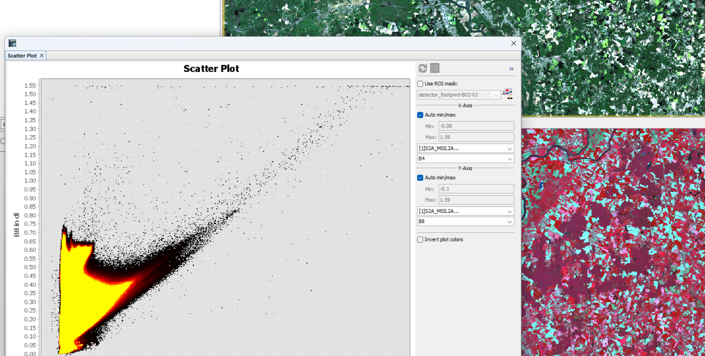
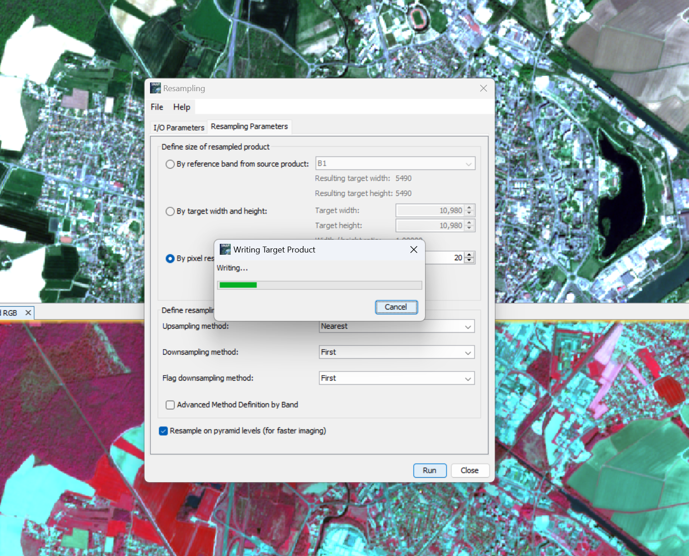

Week 1 Introduction to Remote Sensing
Overview
For the first week, we are introduced to the concept of remote sensing and how to download data and images collected by satellites and perform basic analysis with SNAP and R.
Remote sensing is part of GIS but it involves more than just GIS.
Remote Sensing Overview
- Active vs Passive sensors
- Active: Emits EM waves or other energy from its own sensors (radar, LiDar etc.) to measure and capture the landscapes/features of the area of interest.
- Passive: Detects and captures the natural energy signals radiated by of the area of interest.
- Data in Remote Sensing: Mainly raster data.
- Four resolutions: Remotely sensed data and applications will vary based on the four resolutions
- Spatial: Refers to the size of one pixel on the ground (e.g. 20cm or 30m) Higher Spatial resolution means finer details.
- Spectral: Describes the number and width of spectral bands the sensor records data in.
- Temporal: The frequency with which a sensor revisits the same location.
- Radiometric: identify differences in light or reflectance, in practice this is the range of possible values for example, an 8-bit sensor has values between 0 and 255 (256 possibilities), captures much fewer energy levels than an 11-bit sensor has values between 0 and 2047 (2048 possibilities), in this sense, the 11-bit sensors captures finer-grained data.
Case Study of Bristol
For this practical, I picked Bristol as its distinct urban and suburb area split. The data is downloaded from EU Copernicus Data Portal and Earth Explorer. The Sentinel 2A data is from April 17th, 2022 and the Landsat 8 data is from Sept 07th, 2023.
First, I performed a scatter analysis for the greater Bristol area that I have picked for the analysis, this includes a large portion of suburb land, which indicates high biomass in the analysis.



Later on, I performed the down sampling for Sentinel-2A images to align its resolution with Landsat images.

Results
After down-sampling Sentinel images and cross-analyzing it with LandSat of the POI, downtown area of Bristol, the result is recorded below, indicating high urban.

Reflections
Remote sensing is certainly more than what I have previously pictured, which involves mainly a great deal of image processing. On the contrary, it consists of a balanced amount of geophysics, actual physics, and last but not least geography. (Navalgund, Jayaraman, and Roy 2007) In short, it is an interdisciplinary realm comprised of decades of studies and applications. While traditional image processing or computer vision certainly plays an important role, (Wilkinson 1999) further development in remote sensing certainly will demand a deep understanding of GIS, atmospheric science, spectral analysis, environmental science, ecology, and sensor technology etc. (Batty 2013) Recent development in the research of transportation highlights the integration of remote sensing data into hybrid models for specific urban topics such as travel behaviour prediction.(Wang et al. 2024) The utility of remote sensing has traditionally been rooted in agricultural applications, however, its relevance to urban studies is increasingly being recognized, such as its application in urban sustainability. (Sabri et al. 2022)
Aside from the metaphysical overview of remote sensing as an interesting area of research, I further browsed around EU Copernicus Data Portal and Earth Explorer to see what data I can have access to, for future research uses within and beyond the module.